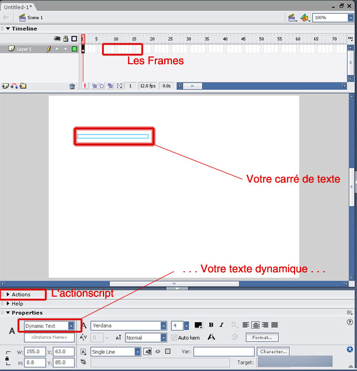
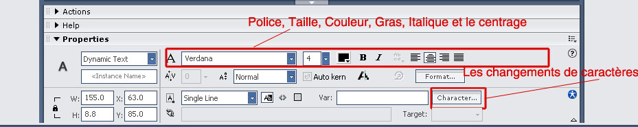

Dans ce tuto j'expliquerai comment importer un texte dans flash à partir d'un fichier .txt (une liaison entre les deux si on veut :euh: ). Ce n'est pas très compliqué, pour faire simple il suffit de demander à flash d'aller chercher le fichier .txt et de l'intégrer dans l'animation. :)
À quoi ça me sert moi d'apprendre tout ça ?
Si vous voulez développer un site qui contient beaucoup de flash et que vous souhaitez le mettre à jour souvent, vous n'aurez qu'à modifier le fichier .txt (avec le bloc-notes ou autre) pour simplement changer une partie du texte. C'est comme un système de news en PHP, mais en moins compliqué et qui utilise Flash.
Avant de commencer, voici un petit lexique, pour que vous ne soyez pas trop perdu...
Actionscript: c'est le langage (comme le javascript) qu'a inventé Macromedia pour aider les flasheurs dans leurs animations, on peut presque tout faire grâce à ce langage (exemples : mettre de la musique dans une animation, intégrer un fichier .php, faire de la 3D...). Mais aujourd'hui nous ne sommes pas encore là !
Ligne du temps : c'est là qu'on retrouve les frames qui permettent de faire avancer/jouer l'animation.
Frame : une frame, ce sont les rectangles qu'il y a dans la ligne du temps, ils permettent de faire changer de mouvement (exemple : quelqu'un qui saute à la corde à danser, se situera en bas dans une frame et en haut dans l'autre). En d'autres mots, cela peut permettre de faire bouger un objet image par image...
Qu'est-ce que flash fait de mieux que le HTML/CSS/Javascript, etc... ?
Ce logiciel permet d'ajouter beaucoup plus d'activité dans une page web. Prenez exemple sur la plupart des templates de templatemonster.com et d'autres sites qui utilisent seulement flash comme 2advanced.com . Animation, interactivité, jeux, sons... tout est presque possible quand on sait comment faire ! ;)
Bon, on va y aller doucement pour débuter. :) Commencez par ouvrir le bloc-notes pour faire votre fichier .txt (qu'on nommera ici : texte.txt ) Écrivez alors :
texte= VOTRE TEXTE ICI !
Le paramètre texte dit à flash d'intégrer cette partie seulement du fichier. On devra la renvoyer dans flash dans un champ qui se nomme var .
Nous voici dans la partie la plus compliquée du tuto ! :-° Ne vous en faites pas tout va bien aller... Bon ce qui serait utile en premier lieu, c'est d'ouvrir flash. ^^
Une fois que flash est ouvert, mettez les proportions, la couleur de fond et les propriétés comme vous le souhaitez. Ensuite, cliquez sur l'outil texte et faites un carré de la grandeur que vous voulez.
Bon, voici une image pour vous aider à mieux comprendre ce que nous devrons faire plus tard et ce qu'il y a normalement de fait ;) :

Sous l'option Var (onglet propriétés ouvert, descendez un peu à droite, vous verrez sur l'image) inscrivez : texte
A partir de maintenant, cliquez (une fois) sur la première frame (la seule d'ailleurs) de votre animation. Ensuite, allez dans Actionscript (indiqué sur l'image plus haut) et entrez le code suivant :
loadVariablesNum("texte.txt", 0)>
Veuillez vous assurer que le nom (texte.txt) est EXACTEMENT le même que celui du fichier que vous avez enregistré... (celui avec texte= VOTRE TEXTE ICI). Assurez vous aussi que votre animation se trouve dans le même dossier que le fichier .txt ... Sinon inscrivez :
Comme vous remarquerez surement, lorsque vous écrirez dans votre texte des accents, ou des symboles comme ,."«»)( , ceux-ci n'apparaitront pas !! :o Je sais, c'est assez mooche, mais il y a un moyen de modifier ceci... Voici une image qui vous aidera davantage (une image vaut ici mille mots) :

Tout près de Var vous trouverez le bouton Character (ou Caractère en français). Cliquez dessus. Comme c'est magique, vous avez maintenant une liste des caractères qui pourront alors apparaîtr lorsque vous écrirez votre texte. Ajoutez même du Japonais si vous le désirez ! :D
Ensuite faites OK.
Vous constaterez que vous pouvez modifier la taille de votre texte, s'il est sélectionnable ou pas, s'il est dans un rectangle, etc... BONNE CHANCE !
Maintenant tout devrait être en ordre... Faites Actions > tester l'animation pour voir si tout fonctionne bien, et ça devrait ! ;)